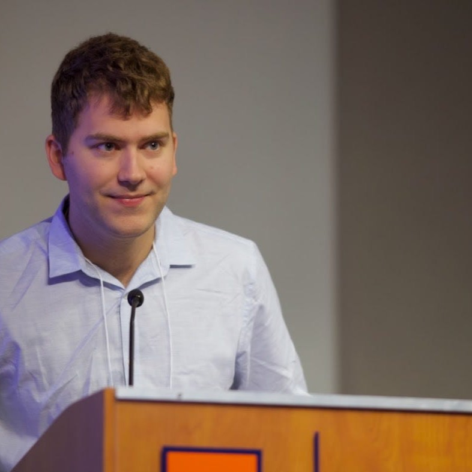

European Southern ObservatoryKarl-Schwarzschild-Straße 2
85748 Garching bei München
Germany
I am a PhD candidate in astronomy at the University of Illinois Urbana-Champaign, advised by Joaquin Vieira. I was an NSF Graduate Research Fellow from 2023–2026 and am currently participating in the European Southern Observatory Studentship Programme.
I work on strong gravitational lensing in the galaxy-galaxy regime. Lensing acts as a “cosmic microscope,” magnifying distant background galaxies; at the same time, modeling the distortion of their light constrains the mass distribution of the foreground lens. My work focuses on both of these aspects of lensing, applied to submillimeter-selected lenses from South Pole Telescope surveys. As a radio astronomer by training, I primarily use the Atacama Large Millimeter/submillimeter Array (ALMA) in my research.
Before Illinois, I received my BA in astronomy and physics from Wesleyan University and spent a year at the Cosmic Dawn Center in Copenhagen as a Fulbright scholar.